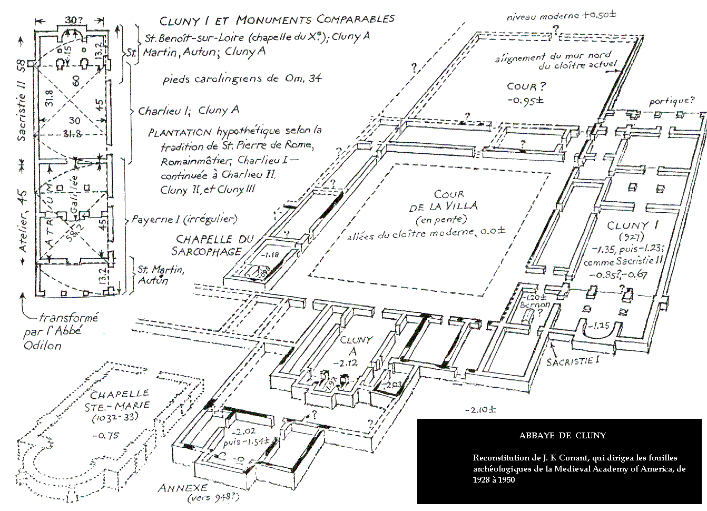

Cluny I (c. 917-925)
In the Roman imperial period, Cluny had had a large Roman villa (rural estate), which had continued in use in some form, was an estate owned by the Carolingian emperors, then was given to the dukes of Aquitaine, who used it as a hunting lodge. As such, it probably already had a large chapel in it, which is known as Cluny A. When the monastery was founded, Abbot Berno (910-927), came from another monastery with 12 monks. Originally they lived in the existing villa. They started very humbly, and with the help of their peasants built the first church (Cluny I) and the monastic buildings. Berno was associated with other monasteries also (he was from a noble family, so had many connections), and started to reform some of those also. The next abbot, Odo (927-942), came to Cluny with Berno as a monk in 910, and visited Rome several times between 936 and 942, reforming monasteries and acting as diplomat. Other monasteries started to come under control of Cluny. Apparently Odo was so saintly that people didn't mind his control. We don't know much about Cluny I, since it was completely covered over by later buildings. The church was built c. 927, possibly to the south of the villa. It may have been the structure that later became the sacristy for second church (as shown here). Then an addition was made to Cluny A around 948. |
 |